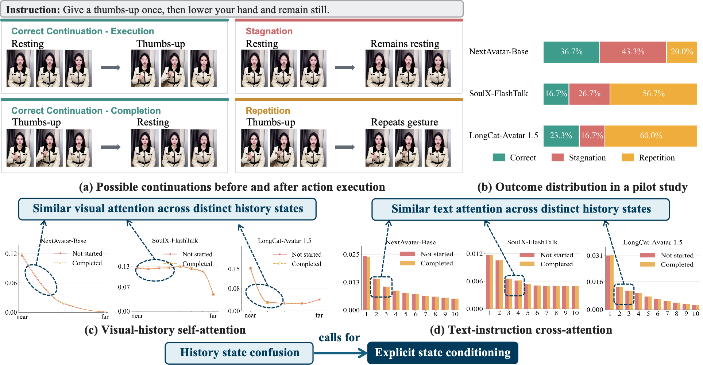
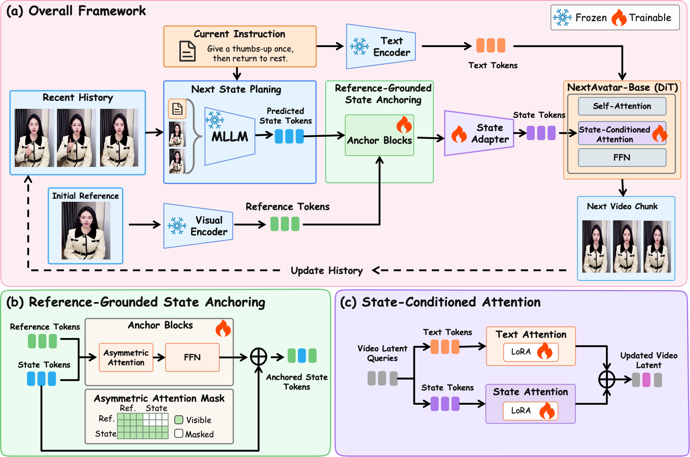
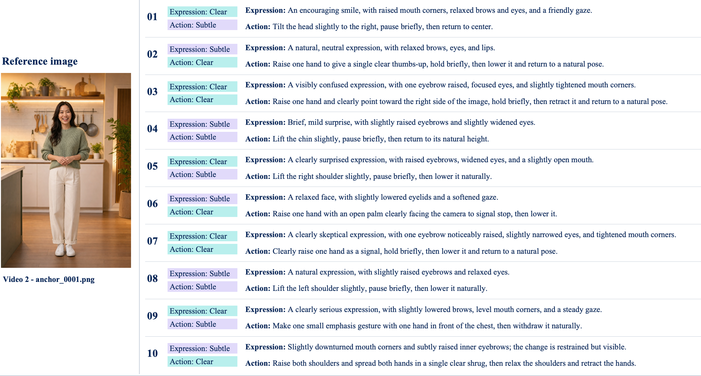

Overview
Streaming avatar generation synthesizes video chunk by chunk, conditioned on visual history and text instructions. Each chunk typically covers about one second, often too short to complete an action, so a single instruction spans multiple chunks during training and inference. Coherent action progression therefore requires the generator to account for what the avatar has already done.
However, we observe that streaming generators often stagnate before executing an action or repeat it after completion. To investigate these failures, we analyze the attention mechanisms that incorporate visual history and text instructions into generation. We identify history-state confusion: attention to both conditions remains largely unchanged across distinct execution states under the same instruction, failing to adequately distinguish action progress and leading to stagnation and repetition.
To address this problem, we propose NextAvatar. We use a frozen pretrained multimodal large language model to interpret the history state and active instruction, then provide an explicit next-state visual plan through state-conditioned attention. To reduce appearance deviations in the planned state, we introduce Reference-Grounded State Anchoring, which refines its visual features through asymmetric attention to fixed initial-reference features.
We further introduce the Multi-Instruction Responsive Avatar Benchmark (MIRA-Bench), comprising 2,000 expression–action intervals to evaluate Human Fidelity, Instruction Responsiveness, Video Quality, and Action Progression. With a 1.3B generator backbone, NextAvatar achieves the strongest Instruction Responsiveness among the evaluated methods and reduces combined stagnation and repetition from the best external baseline's 52.5% to 30.5%, while maintaining competitive Human Fidelity and Video Quality.
History-state confusion
Visual continuity is not action continuity. The same terminal pose can mean “the action has not started” or “the action is already completed”, and these two history states demand opposite continuations.

As shown in (a), the instruction “give a thumbs-up once, then lower your hand and remain still” admits four possible continuations. Before the gesture begins, the avatar should perform it, whereas remaining still constitutes stagnation. After the gesture is completed, the avatar should lower its hand and remain still, whereas performing the gesture again constitutes repetition. We call the action progress reflected in the preceding video the history state, and the intended behavior in the upcoming chunk the next state.
In our pilot study on randomly generated examples (b), these failures occur in NextAvatar-Base, a streaming avatar generator trained by us, as well as in SoulX-FlashTalk and LongCat-Avatar 1.5, showing substantial stagnation and repetition.
We further compare paired runs with the same instruction and different history states to examine how these models attend to visual history and text. Across the models, self-attention is allocated similarly across visual-history positions in the not-started and completed states (c). Cross-attention over instruction tokens likewise changes little between the two states (d). These attention patterns suggest that attention to the visual history and instruction does not adequately reflect changes in action progress. We term this history-state confusion: the current attention mechanisms respond similarly to histories with different action progress. This calls for explicit state conditioning based on visual history and the instruction.
NextAvatar
Next-State Planning (NSP) → Reference-Grounded State Anchoring → State-Conditioned Generation.

An instruction may span multiple chunks, so the appropriate next state depends on the action progress recorded in the visual history, namely the history state. When attention responds similarly to histories at different stages of execution, this history-state confusion can lead to an incorrect next state, causing stagnation before execution or repetition after completion. NextAvatar addresses history-state confusion by explicitly planning the next state from the visual history and active instruction. Next-State Planning (NSP) uses an MLLM to interpret the history state and predict the intended continuation. Reference-Grounded State Anchoring then refines this prediction using the initial reference to constrain appearance deviations inherited from generated history. A state adapter converts the anchored prediction into generator conditions, which are introduced through state-conditioned attention. Each generated chunk updates the history for subsequent planning.
MIRA-Bench results
With a 1.3B generator backbone, NextAvatar reaches the highest Instruct Follow and VisionReward among all evaluated methods, and the lowest combined repetition and stagnation rate in human evaluation.

| Method | Params | Human Anatomy ↑ |
Human Identity ↑ |
Human Clothes ↑ |
Instruct Follow ↑ |
Vision Reward ↑ |
Aesthetic Quality ↑ |
Imaging Quality ↑ |
|---|---|---|---|---|---|---|---|---|
| LongCat-Avatar 1.5 | 13.6B | 0.9680 | 0.9441 | 1.0000 | 0.5710 | 0.9370 | 0.5429 | 0.7479 |
| SoulX-FlashTalk | 14B | 0.9602 | 0.9707 | 1.0000 | 0.4445 | 0.9251 | 0.5797 | 0.7296 |
| SoulX-LiveAct | 14B | 0.9691 | 0.9650 | 1.0000 | 0.6395 | 0.9219 | 0.5472 | 0.7425 |
| Live Avatar | 14B | 0.9129 | 0.9542 | 1.0000 | 0.5690 | 0.9214 | 0.5533 | 0.7356 |
| TaoMate | 22B | 0.9519 | 0.8102 | 0.9648 | 0.6245 | 0.9281 | 0.5518 | 0.7320 |
| AptAvatar | 14B | 0.9686 | 0.9725 | 1.0000 | 0.5405 | 0.9238 | 0.5619 | 0.7400 |
| NextAvatar | 1.3B | 0.9338 | 0.9323 | 1.0000 | 0.6495 | 0.9397 | 0.5700 | 0.7427 |
NextAvatar leads in Instruct Follow (0.6495) and VisionReward (0.9397) and takes the second-best Aesthetic and Imaging Quality, while Human Anatomy and Human Identity remain below the leading external methods.
| Method | Total Error ↓ | Stagnation ↓ | Repetition ↓ |
|---|---|---|---|
| LongCat-Avatar 1.5 | 54.5% | 28.0% | 26.5% |
| SoulX-FlashTalk | 78.0% | 71.0% | 7.0% |
| SoulX-LiveAct | 76.0% | 27.5% | 48.5% |
| Live Avatar | 59.0% | 6.0% | 53.0% |
| TaoMate | 52.5% | 24.0% | 28.5% |
| AptAvatar | 77.0% | 30.0% | 47.0% |
| NextAvatar | 30.5% | 6.0% | 24.5% |
NextAvatar attains the lowest combined error of 30.5% versus 52.5% for the best external method (TaoMate) — a 22.0-point absolute reduction. It ties for the lowest stagnation rate (6.0%) and achieves the second-lowest repetition rate (24.5%). Evaluating repetition and stagnation jointly is essential: SoulX-FlashTalk has little repetition but frequently stagnates, whereas Live Avatar rarely stagnates but often repeats actions.